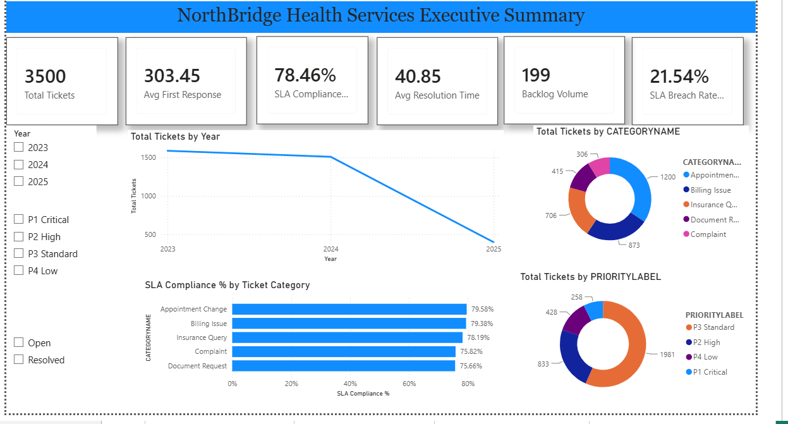

Business intelligence · Amdari team project
NorthBridge service performance
Five Power BI dashboards bring together ticket volumes, SLA risk, workload and forecasting for the NorthBridge training case.
Explore the case study: NorthBridge service performance
The problem. Service teams needed a consistent view of missed deadlines, backlogs and uneven workloads.
My contribution. Built the analytics layer on the team's Snowflake reporting pipeline, using a tickets fact table, dimensions and reusable DAX measures. Presented the findings and recommended earlier P1 warnings, workload rebalancing and weekly KPI reviews.
The result. The source presentation reports 3,500 tickets and 754 SLA breaches. These are findings from the project dataset, rather than improvements after deployment.
Scope. Group 4 Amdari project. The cloud data pipeline was the data engineer's contribution.